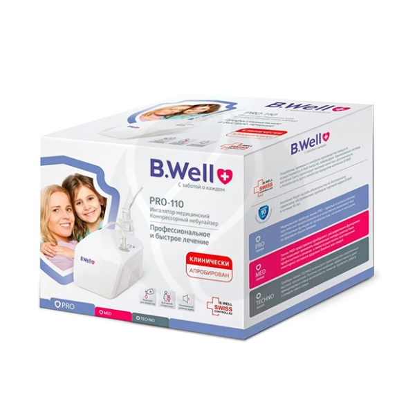

| AnD UA-888EAC Автоматический тонометр эконом с адаптером |
Цифровой автоматический тонометр AND UA-888EAC, Эконом, с манжетой AND Cufbox-AU для рук с длиной окружности плеча 22 - 32 см. предназначен для применения в качестве индивидуального средства контроля артериального давления и частоты пульса, а также для динамических наблюдений за этими параметрами в медицинских учреждениях.
Отличие модели тонометра AND UA-888E от модели тонометра AND UA-888EAC в наличии у последней модели сетевого адаптера AND TB-233C. |
2499 |
 |
| B.Well PRO-110 Компрессорный ингалятор |
Компрессорный небулайзер B.Well PRO-110 обладает возможностями профессиональных приборов и соответствует Европейскому стандарту для небулайзеров EN 13544-1
Малый размер частиц 3,16 мкм позволяет лекарству глубоко проникнуть в нужный отдел легких для быстрого выздоровления. Высокая скорость распыления 0,4 мл/мин сокращает время процедуры.
Ингалятор-небулайзер PRO-110 подойдет для взрослых и детей. Надежный компрессор нового поколения, компактный дизайн, пониженный уровень шума делают этот прибор удобным для всей семьи. В комплект PRO-110 входят не только мундштук и маски для детей и взрослых, но и насадка для носа, которая позволяет использовать небулайзер при насморке.
|
2680 |
 |